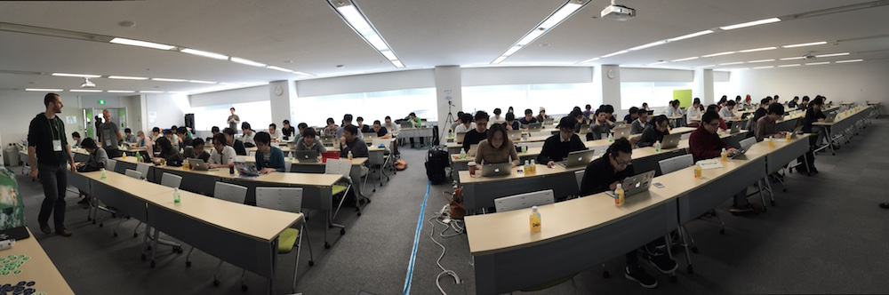

Welcome to the Portland Maine chapter of
Nodeschool
Organized by Carlo DiCelico & Shawn Campbell and Sponsored by ThinkTank
nodeschool.io/portland-me - @NodeschoolPWM
meetup.com/nodeschool-portland-me - gitter.im/nodeschool/portland-me
http://nodeschool.io/portland-me/workshop-one/slides
What is Nodeschool?
International
There are currently 80 Nodeschool chapters worldwide
More join nearly every month

Community-organized
Run entirely by volunteers
using Open Source software
In-person Workshops
Collaboration-based learning
with mentors to help answer tough questions
On NodeJS
While Nodeschool is very technology-specific,
you'll be surprised at how much you can do with node
Putting it all together, Nodeschool is
International community-organized in-person workshops on NodeJS
and now there's one here in Portland!
But wait...what's NodeJS?
Side Note...
The 'JS' in 'NodeJS' stands for Javascript a programming language with C syntax , based on ideas from Scheme and Smalltalk and originally made to run in web browsers
Javascript looks like this
function linkify( selector ) {
if( supports3DTransforms ) {
var nodes = document.querySelectorAll( selector );
for( var i = 0, len = nodes.length; i < len; i++ ) {
var node = nodes[i];
if( !node.className ) {
node.className += ' roll';
}
}
}
}
and is not related to
the Java programming language
the tasty beverage
or the island in Indonesia
NodeJS is something that lets you run Javascript anywhere
Learn some Git!
Learn some Javascript!
Learn some Node!
Cool infographics about NodeJS
NodeJS Goes Mainstream in the EnterpriseGetting to Know Node
Growth of NPM